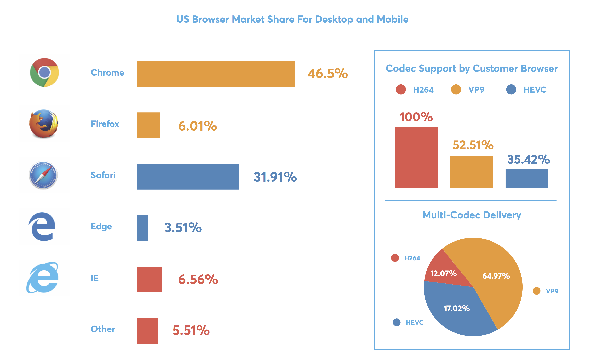

UC-2 - Example to play back most optimal codec depending on platform...
IE/Other > AVC - https://bitmovin-a.akamaihd.net/content/multi-codec/h264/stream.mpd
Safari/EDGE > HEVC - https://bitmovin-a.akamaihd.net/content/multi-codec/hevc/stream.mpd
Chrome > VP9 - https://bitmovin-a.akamaihd.net/content/multi-codec/vp9/stream.mpd
IE/Other > AVC - https://bitmovin-a.akamaihd.net/content/multi-codec/h264/stream.mpd
Safari/EDGE > HEVC - https://bitmovin-a.akamaihd.net/content/multi-codec/hevc/stream.mpd
Chrome > VP9 - https://bitmovin-a.akamaihd.net/content/multi-codec/vp9/stream.mpd

Google Chrome 57.27% H.264, VP9
Mozilla Firefox 7.70% H.264, VP9
Safari 15.88% H.264, H.265*
Microsoft Edge 2.13% H.264, H.265, VP9**
Internet Explorer 7.28% H.264